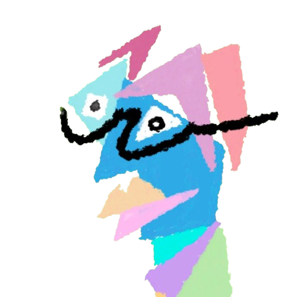

About Me.
嗨！我是 M4RVjN，一名對資安技術與機器學習充滿熱情的學生。
閒暇的嗜好大概就是彈吉他、聽爵士樂和畫畫了吧。
這個網站主要分享我的一些經歷、作品和文章，有時候可能會穿插一些我亂畫的朋友們(?)
嗨！我是 M4RVjN，一名對資安技術與機器學習充滿熱情的學生。
閒暇的嗜好大概就是彈吉他、聽爵士樂和畫畫了吧。
這個網站主要分享我的一些經歷、作品和文章，有時候可能會穿插一些我亂畫的朋友們(?)
成立明志科技大學 工業人工智慧學士學位學程學會
工業人工智慧學士學位學程學會 第零屆 會長
工業人工智慧學士學位學程學會 第一屆 會長
華電聯網/開啟資安-資安部實習
iPAS資安初級證照
MyfirstCTF 14th
AIS3 2025
明志科大 工業人工智慧學士學位學程畢業